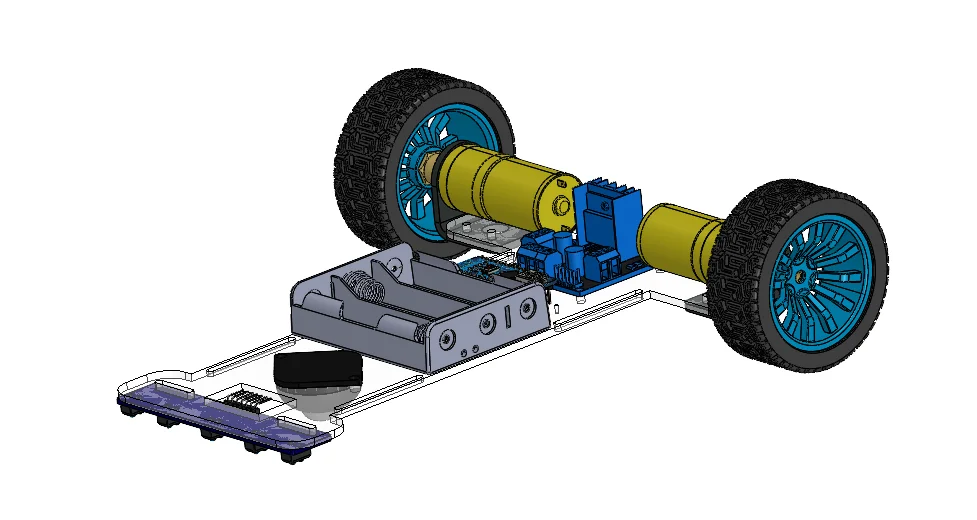
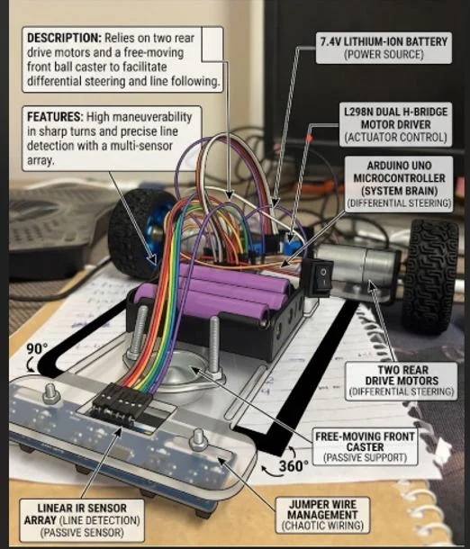

Line Follower Robot
An autonomous robot that follows a line at speed. Five infrared sensors measure where the line is, a PID controller turns that error into steering, and the robot took part in a campus robotics competition.

Fast, but never lost
Built for the Mobile Robots course (MAM331) at the Faculty of Engineering, Benha University. The aim was autonomous line tracking with PID steering correction that stays stable at high speed, and the robot finished the competition course with fast completion times and reliable cornering.
How it steers
The five-sensor array maps the line position from -2 (far left) to +2 (far right). That value is the error. The PID controller uses it to speed one motor up and slow the other down.
Software features
Chassis and hardware
The chassis was designed in SolidWorks, then the parts were assembled and wired. It uses two rear drive motors and a free-moving front caster for differential steering, with the sensor array at the front.

Electronics
Drive
Tuned by testing
The PID gains were tuned experimentally on the real track for stability at high speed. The team built the chassis, assembled the hardware, wrote the control code in Embedded C/C++ and competed on campus.